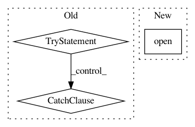

c6efa62e3684ef380523fcb6c02d881c55fd1e3e,setup.py,,read,#,44
Before Change
def read(fname):
try:
with open(os.path.join(os.path.dirname(__file__), fname)) as f:
return unicode(f.read(), "utf-8")
except NameError:
//python 3
with open(os.path.join(os.path.dirname(__file__), fname)) as f:
return f.read()
def read_to_rst(fname):
try:
import pypandoc
//print "Warning in installation: For rst formatting in pypi, consider installing pypandoc for conversion"
After Change
def read(fname):
import codecs
with codecs.open("README.md", "r", "utf-8") as f:
print(f.read())
def read_to_rst(fname):
In pattern: SUPERPATTERN
Frequency: 3
Non-data size: 3
Instances
Project Name: SheffieldML/GPy
Commit Name: c6efa62e3684ef380523fcb6c02d881c55fd1e3e
Time: 2015-10-12
Author: ibinbei@gmail.com
File Name: setup.py
Class Name:
Method Name: read
Project Name: openml/openml-python
Commit Name: 33c3a8101efe1cb66599831c03a6b960248a8718
Time: 2016-03-25
Author: feurerm@informatik.uni-freiburg.de
File Name: openml/datasets/functions.py
Class Name:
Method Name: _get_dataset_qualities
Project Name: lingpy/lingpy
Commit Name: b46114a5b8076c38e765811bd6d55ed2930d9975
Time: 2013-11-14
Author: mattis.list@posteo.de
File Name: lingpy/convert/html.py
Class Name:
Method Name: alm2html